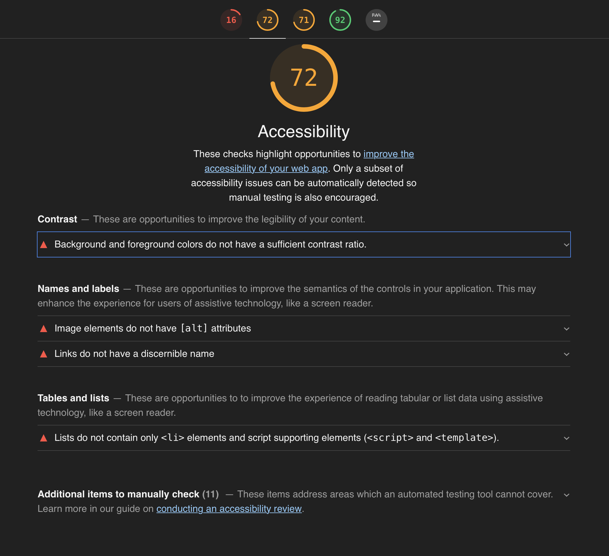
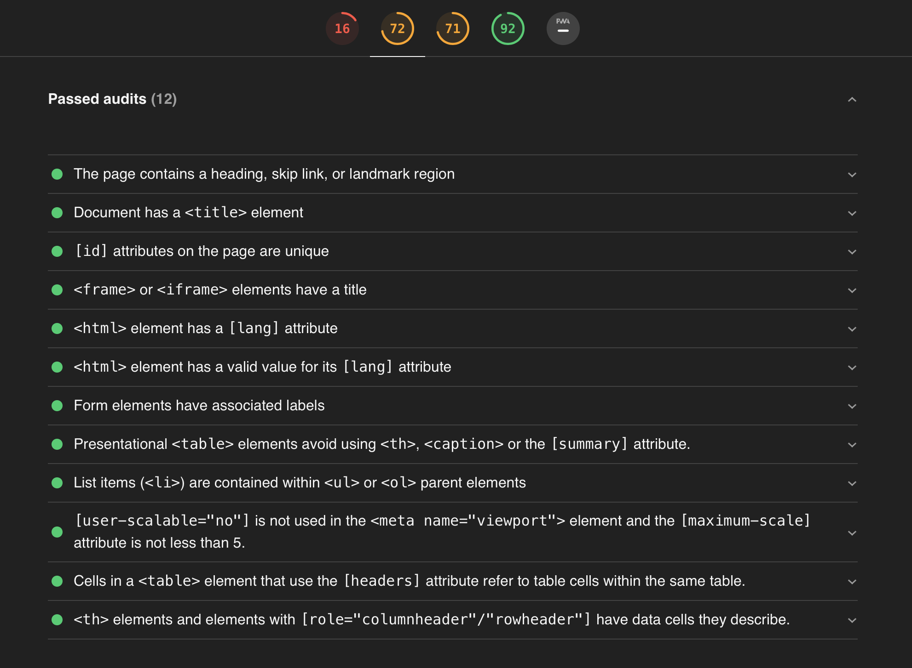

Acessibilidade na interação humano-computador
Autor: Erick GiffoniO que é acessibilidade ? Uma definição do Dicionário Priberam

Ok... e o que é acessível ?

Hmmmm... e como isso se aplica na interação humano-computador ?
Percebe-se que acessibilidade é uma qualidade, ou seja, é um atributo, uma característica do que é acessível, ou seja, daquilo a que se pode chegar. Assim, para IHC, acessibilidade está relacionado à facilidade de uso, à usabilidade do site e à experiência de todo e de qualquer usuário. O website, nesse contexto, deve atender à um conjunto de princípios ou de normas para que deficiências de visão, ou de coordenação motora, ou de audição, ou qualquer outra não sejam um empecilho para que o usuário consiga navegar no site.
Objetivos da avaliação de acessibilidade
-
Pontuar os acertos do Codeforces em relação à acessibilidade ;
-
Encontrar os pontos negativos (as falhas) do Codeforces em relação à acessibilidade ;
-
Consolidar os resultados encontrados para propor melhorias ao Codeforces.
Sobre a ferramenta Google Lighthouse
O Lighthouse é uma ferramenta automatizada de código aberto que aprimora a qualidade de apps da Web. Ele pode ser executado como extensão do Chrome ou na linha de comando. Basta informar ao Lighthouse a URL do site que você quer auditar e a ferramenta executará uma série de testes na página. Ao final, um relatório sobre o desempenho da página é gerado. Nesse relatório, você poderá usar os testes que apresentaram falha como indicadores do que pode ser feito para aprimorar o aplicativo.
(Adaptado de Auditar apps da Web com o Lighthouse)
Avaliação do Codeforces usando o Google Lighthouse
A avaliação do Google Lighthouse leva em conta outros aspectos, além da acessibilidade, como :
- Performance
- Best Practices
- SEO (Search Engine Optimization)
- Progressive Web App
Para cada aspecto avaliado, a ferramenta em questão dá uma nota de 0 (zero) a 100 (cem), sendo zero o pior valor e cem o melhor valor.
Com relação à acessibilidade, a imagem abaixo resume a avaliação feita pelo Google Lighthouse para a página inicial do Codeforces, com uma nota igual a 72 (setenta e dois) :
 
Clique aqui para visualizar a avaliação completa pelo Google Lighthouse [1]
Referências
Versionamento de edições desta página
| Data | Autor | Descrição | Versão |
|---|---|---|---|
| 16/11/2019 | Erick Giffoni | Criação da páginaAdição das referênciasAdição da avaliação em html pelo Google Lighthouse | 0.1 |
| 16/11/2019 | Erick Giffoni | Adição dos objetivos da avaliação de acessibilidade | 0.2 |
| 17/11/2019 | Erick Giffoni | Adição da descrição sobre a ferramenta Google Lighthouse | 0.2.1 |